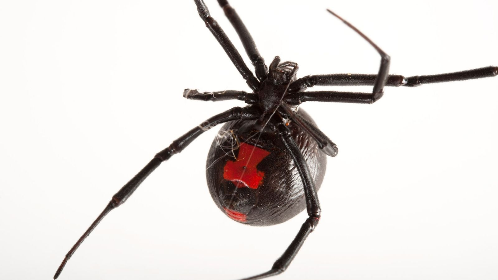

Viúva Negra
A Latrodectus hasseltii é uma aranha nativa da Austrália potencialmente perigosa. É um tipo de viúva-negra (membro do gênero Latrodectus), a qual é encontrada em todo o mundo. A fêmea é facilmente reconhecida por seu corpo negro com uma proeminente listra vermelha em seu abdômen. O corpo das fêmeas mede cerca de um centímetro enquanto o do macho é menor, tendo apenas de 3 a 4 milímetros de comprimento.
Ela tem um veneno neurotóxico perigoso para humanos, com uma picada que causa muita dor.